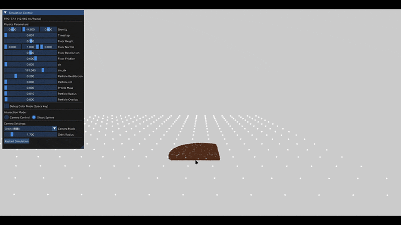

MPM Simulation using 3D Texture Grid
OpenGL / コンピュートシェーダーを用いた、GPUベースの粉粒体シミュレーションとSDF空間管理

研究概要 (Overview)
本プロジェクトは、土砂などの粉粒体の破壊や堆積をリアルタイムにシミュレーションするシステムです。「状態を保持する粒子」と「力学計算を担当するグリッド」を組み合わせるMPM（Material Point Method: 物質点法）を採用しています。
通常、計算負荷が非常に高い手法ですが、グリッド構造をGPUネイティブな「3Dテクスチャ」に代替し、コンピュートシェーダーによる並列処理と低レイヤのメモリ最適化を行うことで、圧倒的な計算量の壁を突破しました。
さらに、外部の3DモデルをSDF（符号付き距離関数）として空間内に読み込み、画面クリックから任意のオブジェクトを射出して干渉させる、インタラクティブな体験を実現しています。
アーキテクチャの設計思想や問題等の解決アプローチについては以下にまとめています。
GitHubで技術ドキュメント（README）を見る技術的ハイライト (Technical Highlights)
従来の手法における計算コストと実装の複雑さを、GPUネイティブなアプローチによって解決しています。
1. グリッドの「3Dテクスチャ化」と近傍探索の排除
配列や空間分割木を用いたグリッド構造を廃止し、3Dテクスチャ（Image3D）で代替しました。空間座標をそのままインデックスとして利用し imageLoad / imageStore で直接アクセスすることで、重い近傍探索処理を完全に排除しています。
2. SDFとレイキャストによるインタラクション構築
外部モデルからSDFテクスチャを生成する「リソース」と、空間内での姿勢や速度を管理する「インスタンス」を分離設計し、メモリを最適化。さらに、カメラの逆行列を用いたレイキャスティングを実装し、2Dの画面クリックから任意の形状の3Dオブジェクトを正確に射出するインタラクションを実現しました。
3. C++ / GLSL間の厳密なメモリアライメント設計
データマッピング時の未定義動作を防ぐため、16バイト境界（std140 / std430）を意識した厳密な構造体パディングを設計し、安全かつ高帯域なデータ転送を行っています。
4. 並列処理の競合回避と独自実装
複数粒子から同一グリッドへの同時書き込みによるスレッド競合を、CAS（Compare-And-Swap）ループを用いたAtomic加算で解決。また、応力計算に必要なSVD（特異値分解）も外部ライブラリに頼らずGLSL内で独自実装しています。
パフォーマンス評価 (Performance Benchmark)
メモリアクセスの最適化により、統合GPUのような軽量な環境でも実用的なフレームレートを達成しています。（※SDF接触判定を含む動的シミュレーションでの計測）
[環境 A] モバイル統合グラフィックス環境
- CPU: Intel Core i7-13620H
- GPU: Intel UHD Graphics （※ディスクリートGPU未使用時）
- 結果:
- 約 10,000 粒子 : 約 85 fps 安定
- 約 100,000 粒子 : 約 18 fps 安定
[環境 B] ワークステーション環境
- CPU: Intel Core Ultra 7 265KF
- GPU: NVIDIA RTX A5000
- 結果:
- 約 100,000 粒子 : 60 fps (※GPU使用率4%。Vsync上限張り付き)
- 約 1,000,000 粒子 : 9 fps
※あえて専用のグラフィックボード（dGPU）を使わない環境Aの検証により、低レイヤのメモリ最適化が極めて有効に働いていることが実証されました。
既知の課題と今後の展望 (Known Issues & Future Work)
- 物理挙動の安定化: エネルギー保存式の見直しに伴い、シミュレーション領域端で発生している粒子の「スロッシング（沸騰）現象」の減衰処理。
- SDFエッジ判定の向上: 高速な粒子がSDFオブジェクトの鋭角なエッジに衝突した際の、補間誤差による不自然な反発やめり込みの改善。
- レンダリング手法の拡張: ポイントベースの描画から、ボリュームレンダリング等を用いた、より高品位な流体・粉体表現への移行。